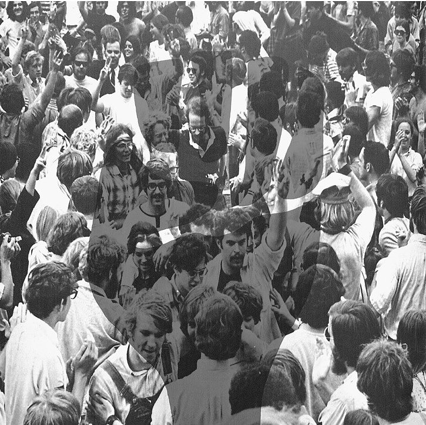

The Age of Change: Student Protest from 1920-1980
Project by Erin Niederberger, Andrew Olden, Kevin Pitkin and Søren Kjær

SOURCE: The Savitar Supplement 1970, 2. Photo courtesy of The University of Missouri Digital Collections.
The University of Missouri, like many college campuses, has often been a site of student unrest and protest. As a major university in a former slave state that had allied with the Union, it became a place where the forces of integration and segregation clashed. Like many institutions of higher education, it also struggled between acting as an enforcer of social norms and as a space for social progress. Throughout the 20th century, students agitated against segregation, the Vietnam War, and homophobia. Whether this clash took place on the sidewalks or in the courtrooms, students stood up against the university in order to call for change.